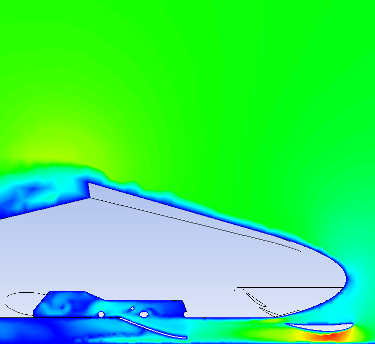
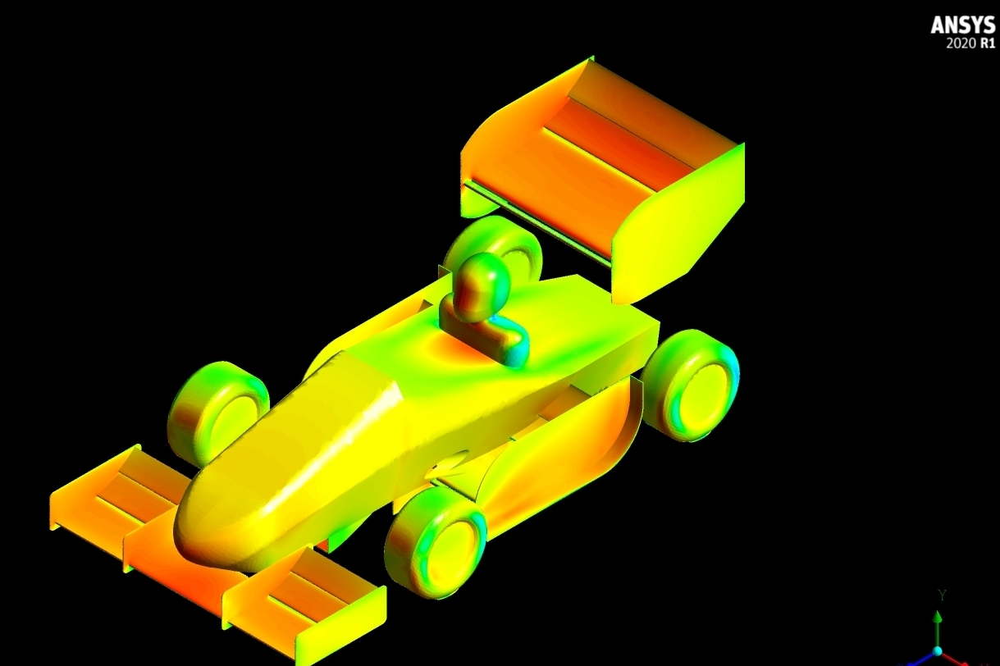
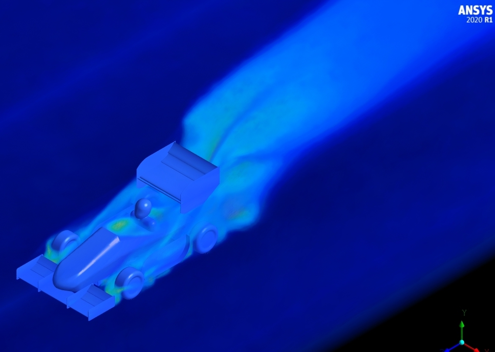

Aerodynamics Team Member - Purdue Electric Racing
August 2021 - Present

- As a member of the Aerodynamics subteam, I have worked on carrying out mesh sensitivity analyses for the multi element rear wing using ANSYS FLUENT, in order to strike a balance between mesh element size and computational resources required to run the simulation. This involved parametrizing the mesh element size and trying out a range of sizes for a constant wind speed. Tracked Lift Force, Drag Force, $C_L$ and $ C_D$
- Designed Wind Tunnel correlation CFD simulations for correspondence between simulation data and acquired data. Obtained a $7$% error margin between observed quantities.
- Designed a parametrized motor controller cooling simulation in ANSYS, which uses an underbody, variable angle duct to feed air into the motor controller housing. Tracked the mass flow rate through the duct inlet at different car velocities, in order to determine the optimal duct angle.
- Gained valuable experience in performing carbon fiber layups to construct multi element aerodynamic bodywork
- Currently working on the design optimization of the side wing assembly to minimize drag and maximize downforce. It was also important to analyze it’s interaction with the rear wing and understand as well as minimize the turbulence created by the side wing. The following pictures show the CFD study performed, which detail the downforce generated by the various elements on the car, as well as the turbulent interactions between them.

